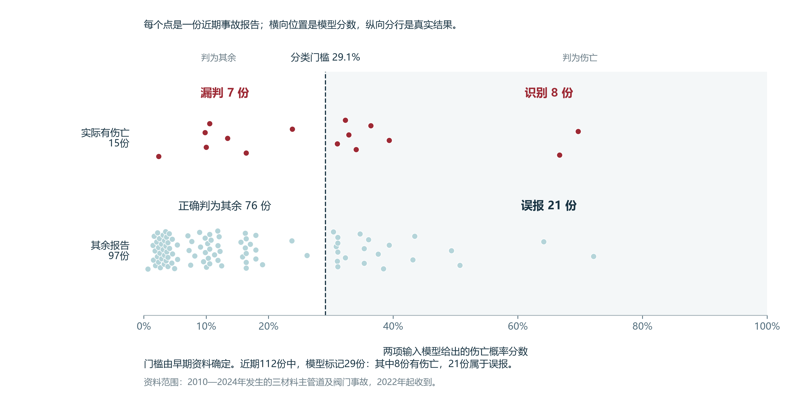

3.1 部件经验提供基本识别信息，森林改善整批排序
第二章从场地、作业过程和设施条件提出了人员伤害的相关因素。本章继续检验哪些信息能够识别伤亡报告，并据此决定评分需要哪些输入、事故复盘还应保留哪些资料。研究结局为整宗事故是否记录死亡或需住院至少一晚的伤害。以下分数反映已报告事故中的历史关联；在用管段未来发生事故、发现损伤后的新增伤害及保护等级，不属于本章已经验证的输出。
先用覆盖各类配气部件的1,550份报告建立基本参照。2010至2021年收到的1,286份用于学习，2022年起收到的264份用于评价，其中65份记录伤亡。常数方法对全部报告采用相同的早期伤亡比例；部件比例规则采用各部件的历史伤亡比例。原方案无惩罚逻辑回归与随机森林则共同使用部件、材料、地点和地区等级，检验合用类别后增加了多少识别信息。近期报告此前已参与探索，本章各项后期比较均为回顾评价。
我们按分数从高到低排列报告，检查伤亡记录是否更集中在前面。平均精确率AP在逐组纳入报告时计算已选报告中的伤亡比例，再按新增伤亡报告数加权汇总，数值越高，整批排序越有利于识别伤亡。图 15还显示同样选取若干份时的伤亡期望数，同一横轴位置的曲线越高，识别越多；同分报告均分入选机会，因此期望数可以是小数。
同选前53份时结果接近，森林改善整批排序


同取前53份时，部件规则、原方案回归和森林均识别约21至22份伤亡报告，高于常数参照的13.05份。森林在部件规则之上只多约0.35份，前端的大部分识别增加已由部件经验提供。考察全部排序，森林的AP为0.382，高于部件规则的0.322，差值95%区间为0.017至0.115；原方案回归为0.336，相对部件规则的增量区间跨零。部件经验因此保留为基本参照，森林的额外价值主要见于整批排序。
排序成绩与固定门槛的分类结果还需分别理解。按早期确定的各自门槛，原方案回归识别33份伤亡、误报47份；森林识别34份、误报76份。森林仅多识别1份，却多出29份误报。完整错漏及决策树的实际计算见章末，这项比较提供广范围的类别参照；下面转向第二章涉及的主管道设施，检验具体规格和运行资料的价值。
3.2 管径与正常运行压力进入简化评分
第二章发现，同种材料的设施仍有不同管径和运行压力，单看材料难以概括事故条件。为确定值得核实的物理资料，我们在同一批693份主管道及主管道阀报告中比较输入，保留规格缺失的报告。范围限定为2010至2024年发生的钢、塑料及铸铁／锻铁事故。候选从部件、材料、地点、地区等级四项类别，扩展到管龄、管径和正常运行压力，合计七个字段；各组合均采用同一种L2逻辑回归，限制系数过大。
输入选择同时考虑排序和概率误差。Brier分数将每份预测概率与实际结果相减，伤亡记1、其余记0，平方后取平均，越低表示概率误差越小。我们先在244份早期验证报告中找到AP最高的候选，再在AP下降不超过0.03、Brier增加不超过0.01的组合中，选择采集字段最少者。这是本研究预先采用的简化规则，用于明确成绩与采集项目之间的取舍。
图 16列出三项物理资料的全部七种组合，实心点表示采用该资料，右侧圆点越靠右表示早期排序越好。管径加正常压力的AP为0.4272，高于四项类别的0.3218，并与三项物理资料合用接近；仅用管径为0.3958，未通过简化规则。全部候选中的最高AP为0.4316，来自完整模型删除材料后的组合。管径加正常压力满足两项容差，且字段最少，因此进入主评分。
管径与正常压力合用，按早期规则进入简化评分


选定输入后，模型用合并的581份早期报告重新拟合，再评价后期112份，其中15份伤亡。两字段原概率的AP为0.3028，完整七字段为0.3233，两者差值为−0.0205，95%区间为−0.0985至0.0898。后期结果仍有较大不确定性，本章保留依据早期规则作出的简化决定，不将它解释为已经证明两项信息统计非劣。全部16种方案的共同评价见章末。
评分取舍之外，还要检验第二章提出的因素在合并考虑其他条件后是否仍有关联。下表使用完整七字段模型。伤亡优势是伤亡概率与其余概率之比，例如伤亡概率若为20%、其余为80%，伤亡优势就是20／80。条件优势比再比较两组的伤亡优势，小于1表示对比组较低，大于1表示较高，并非直接比较两组伤亡概率的倍数。
| 条件对比 | 条件优势比 | 95%探索区间 |
|---|---|---|
| 管龄增加10年 | 0.962 | 0.881至1.074 |
| 管径2英寸至4英寸 | 0.530 | 0.412至0.652 |
| 正常压力20至40 psig | 0.750 | 0.663至0.866 |
| 塑料相对钢 | 0.995 | 0.638至1.580 |
| 铸铁锻铁相对钢 | 1.939 | 1.150至3.133 |
| 私人场地相对公共场地 | 1.914 | 1.029至3.380 |
表中较小管径、较低正常运行压力对应较高的伤亡优势。这一方向来自已经发生并上报的事故，说明尺寸和运行压力值得保留为事故比较资料，并不意味着企业调低运行压力会增加伤害。管龄的区间跨1，删去管龄后的早期预测也基本不变，因此本轮评分采用管径与正常压力。铁相对钢、私人相对公共场地仍有条件关联，材料和场地继续用于解释事故情境。关联是否存在与是否值得增加一个评分字段，由两项比较分别回答。
3.3 聚类保留设施画像，钢塑开挖采用共同模型
第二章的物理聚类用管龄、管径和压力描述三类设施。若这些组别能够替代原始量，评分就可以使用较简单的类别。我们在物理资料完整的621份报告中进行同样本比较，其中后期100份、13份伤亡。仅用组别时AP为0.2516，直接用三个物理量为0.3332；四项类别加组别为0.3292，加原物理量为0.3441。早期验证也出现同向差别。计算组别仍需采集三项物理量，因此本轮评分保留原始量，三组继续承担设施画像的用途。
钢管与塑料管的开挖伤亡差异，则提出另一项选择：两种材料是否需要各自拟合模型。我们在391份钢塑开挖报告中比较三种结构，共同模型使用材料、管径和正常压力；交互模型允许管径和压力的系数随材料改变；独立模型分别在钢管和塑料管中拟合。
同一后期70份报告只有4份伤亡。共同、交互、独立模型的AP分别为0.2101、0.2128和0.2079，独立模型未形成稳定增益。钢管早期仅5份伤亡，后期1份，拆分后用于学习和评价伤亡的资料更少。因此，钢塑开挖专题保留含材料的共同模型，材料差别在共同结构中表达；主评分仍采用上一节选定的管径与正常压力。两项比较分别确定了聚类和材料分组的用途。
3.4 两字段模型识别8份伤亡，漏判7份
确定输入后，历史事故判别模型需要给出可复算的分数，并说明实际错漏。管径以英寸、正常运行压力以psig输入，模型经变换和标准化后计算原概率，再按早期选定的sigmoid校准调整概率量值。校准在早期验证中使Brier由0.1294降至0.1277，达到预定改善门槛，因此作为最终规格保留。分类门槛也由早期报告确定，为29.1%。
图 17每点是一份后期报告，横向位置为模型概率，上下两行分别是实际有伤亡和其余报告，虚线右侧判为伤亡。在112份中，模型识别8份伤亡、漏判7份，另有21份误报、76份正确判为其余。即15份伤亡中识别了53.3%，29份被标记报告中27.6%实际有伤亡。这个结果给出了模型的识别能力及伴随的误报数量。
两字段模型识别8份伤亡，同时漏判7份



一份管径12英寸、正常压力10 psig的铸铁主管道报告，可以说明低分处的漏判。两项资料均完整，原概率为12.70%，校准后为9.83%，低于29.1%门槛，但原案实际记录伤亡。该例用于核对计算和错误，模型公式与报告来源保留在章末。
早期胜出的校准在后期没有稳定改善概率误差。校准后的Brier为0.1117，原概率为0.1093；校准后的平均概率为16.8%，实际伤亡比例为13.4%。模型按早期选定的规格交付，同时保留原概率供核对。两字段计算工具与冻结参数提供同一计算。两份后期阀门报告缺少管径，其分数依赖训练中位数填补，应同时显示规格尚未核实；正常运行压力始终指原运行资料中的压力。
3.5 评分优先核实规格与运行资料，复盘保留人员和作业记录
本章确定了两字段的历史事故判别模型，也明确了其余信息的用途。先用部件和材料确认事故属于三材料主管道及阀的研究范围，再以管径和正常运行压力评分。企业整理同类事故资料时，应核实这两项数值、单位与来源。管龄、材料和场地等资料继续服务因素比较与事故复盘；其中有条件关联的因素，不因未进入简化评分而停止记录。
| 用途 | 保留的信息 | 具体记录要求 |
|---|---|---|
| 历史事故评分 | 管径、正常运行压力 | 确认涉事部件及适用范围，核对规格、单位和原运行资料；缺失时注明分数依赖填补 |
| 因素解释与复盘 | 管龄及安装维修历史，材料、部件、场地、地区等级、月份，物理聚类画像 | 核对设施组合、季节和地面记录；场地类型与实际人员位置分别记录 |
| 后续现场判断与措施评价 | 已确认的施工或维修活动，损伤与点燃状态，人员在场、伤害和措施执行时间 | 为每项状态保留确认时间和来源，同时保存执行措施后未发生伤害的作业记录 |
最终事故归因用于解释事故经过；当前活动、点燃状态和人员位置则应按当时已确认的情况记录。第二章已经指出停气、旁通和维修等具体保护任务，后续记录应说明任务进行时谁在场、燃气处于什么状态、措施何时执行、伤害何时发生。这样既能保留本轮可计算的历史判别，也能为下一步评价具体保护任务准备相应证据。
资料与计算说明
各项比较分别使用共同的评价报告
分析单位为事故报告，伤亡指至少一人死亡或因伤住院至少一晚。按收件年份，最早拟合期截至2017年，早期验证期为2018至2021年，合并重拟合期截至2021年，后期为2022年起。输入、校准和门槛依据早期资料确定；后期数据此前已被研究，因此所有后期结果均按探索性回顾评价报告。
| 比较用途 | 全部报告 | 最早拟合 | 早期验证 | 合并重拟合 | 后期评价 |
|---|---|---|---|---|---|
| 广范围四方法参照 | 1,550 | 837 | 449 | 1,286 | 264，其中65份伤亡 |
| 三材料主管道及阀的输入比较 | 693 | 337 | 244 | 581 | 112，其中15份伤亡 |
| 物理资料完整的聚类比较 | 621 | 299 | 222 | 521 | 100，其中13份伤亡 |
| 钢塑开挖模型结构比较 | 391 | 169 | 152 | 321 | 70，其中4份伤亡 |
后三项都从2010至2024年发生的相应主管道事故中取样。693份主实验保留缺失，621份是物理资料完整的子集；各方法只在相应的共同评价集内比较，不跨264、112、100或70份的范围排列成绩。主实验与聚类分期 · 钢塑专题分期
当前保存的1,550份报告中，1,011份标为补充报告，其中850份属于较早收件时期；原表缺少逐字段修订时间。输入何时可得尚未逐案核实。693份主实验早期581份均为主管道，后期另有两份主管道阀报告，不能据这一范围估计进户管等部件的差异。
广范围四方法的计算与完整错漏
常数参照为早期304／1,286＝23.64%。部件比例规则直接使用各部件早期的伤亡比例。原方案逻辑回归为无惩罚的类别主效应模型，不含交互项，部件、材料、地点和地区等级分别采用七、五、四、四类分析分类。少量部件归入其他类，铜和球墨铸铁归入其他材料。
原方案回归计算z＝截距＋部件项＋材料项＋地点项＋地区等级项，再计算p＝1／[1＋exp(−z)]。参照类别为主管道、钢、公共地点和3级地区，参照项系数为0。它与本章物理输入比较的L2模型分别命名。
| 方法 | AP | 前53份伤亡期望数 | 正确识别 | 误报 | 漏判 | 正确判为其余 |
|---|---|---|---|---|---|---|
| 常数方法 | 0.2462 | 13.05 | 65 | 199 | 0 | 0 |
| 部件比例规则 | 0.3219 | 21.65 | 62 | 187 | 3 | 12 |
| 原方案逻辑回归 | 0.3355 | 21.40 | 33 | 47 | 32 | 152 |
| 随机森林 | 0.3818 | 22.00 | 34 | 76 | 31 | 123 |
图 S5保留各门槛对应的矩阵和精确率、召回率曲线。精确率为模型判为伤亡的报告中实际伤亡的比例，召回率为实际伤亡报告中识别出的比例。早期以两者调和平均F1最大值选择门槛，部件规则、原方案回归和森林分别为13.64%、23.56%和23.37%。常数分数与门槛均为23.64%，全部判为伤亡；具体分类使用未四舍五入的分数与门槛。
固定门槛下，森林比原方案回归少漏判1份、多误报29份


固定选取53份仅作同量比较，未据此确定企业实际工作量。同分组只选一部分时，期望伤亡份数等于已完整选中的伤亡份数，加剩余名额乘以同分组伤亡比例。例如部件规则为17＋12×12／31＝21.65份。四方法指标 · 逐份预测 · 累计曲线复算
完整决策树与叶节点比例
决策树按条件逐层划分训练记录，终点称为叶节点。图 S6是原随机森林的第一棵完整树，保留4个问题和5个叶节点。从左向右沿“是”或“否”进入终点，叶节点饼图的深红份额表示该组训练记录中的伤亡比例，也就是这棵树对同条件报告给出的概率。
第一棵树按部件和材料分组，叶节点给出伤亡比例


这棵树先分出进户管，再在其余部件中按材料细分，材料分数因此只适用于进户管以外的部件。钢制室外表具／调压装置依次回答四次“否”，进入右下方叶节点；560条训练记录中107条有伤亡，概率为107／560＝19.11%。图中按抽样出现次数计条，同一原始报告可重复出现。
每棵树从1,286份早期报告中有放回抽取1,286次，第一棵实际包含830份不同报告。不同树的抽样及候选条件不同；森林使用250棵树，最大深度4，叶节点最小样本数25，拟合种子20261107。对同一报告，各树分别给分后取算术平均。图 S7显示钢制室外装置的250个逐树分数，平均为21.76%；柱形合计为树数，表示树间差异，不是概率的置信区间。
250棵树对同一事故给分，平均后得到森林概率

同案报告编号为20220002，按后期报告编号升序选取。其私人地点、3级地区与钢制室外装置输入，使原方案回归得到20.08%，森林得到21.76%。图 S8同时列出常数、部件规则及各自门槛。原案中的车辆碰撞、8名居民疏散和10:35阀门止漏用于解释具体核对事项；本章模型以整批报告评价识别能力。
同一宗室外装置事故的输入、分类与保护核对


该案发生于2021年12月、2022年1月收件，按收件年进入后期评价。其无惩罚回归分数20.08%与旧固定L2回归的21.66%分别记录。完整树节点 · 逐树分数 · 原案与分数 · 原流树PNG · 原流树PDF

原四类资料消融与概率核对
原四类资料消融使用1,286份早期及264份后期报告，固定L2逻辑回归C＝0.05。图 S9保留部件、材料、地点、地区等级的全部15种非空组合；实心方块表示采用该项，圆点为AP，右列为前53份伤亡期望数。这里的仅部件回归与历史部件比例规则分别计算，也与本章693份范围、C＝0.2的物理输入实验分开。
15种输入组合使用同一种L2回归，比较总体排序与前53份


四项回归相对仅部件回归的AP增加0.0022，95%区间为−0.0379至0.0447。两者前53份伤亡期望数分别为21.44和21.65份。图 S10进一步显示，加入材料、地点、地区等级后，私人地点伤亡报告平均多入选2.73份，公共地点少入选2.77份，通行权区域少0.16份，运营商场地为0。区间跨零未证明两者等效；场地变化来自三项资料共同加入。
增加资料后整体识别表现接近，入选报告的场地构成改变


两份公共地点钢制进户管伤亡报告20240034、20250022均为4级地区，分数从仅部件回归的约32.2%降至四项回归的约25.6%，退出前53份。原案分别记载误切仍有燃气的管线，以及公园建筑内泄漏和点火。图 S11再逐项删除输入，四条AP差值区间均跨零，各项独立增益方向仍不确定。
从完整输入中删去一项，AP差值区间均跨零


图 S12核对原广范围模型在各分数段的概率量值。空心点为组内平均预测概率，红点为实际伤亡比例，预期份数为概率之和。森林30%至40%组有28份报告，预期伤亡9.22份、实际12份；其他组偏差方向不同。各方法分数组成员可以不同，不能用某一格的绝对差排列整体可靠性。该图未训练新的校准器，与本章两字段模型的校准实验分开。
预测概率与实际伤亡比例在各分数范围内的对照


15种类别组合 · 逐项消融区间 · 四项对仅部件区间 · 场地入选变化 · 逐份变化
物理输入的预处理与16种方案
物理输入比较固定L2逻辑回归C＝0.2，不重新扫描算法。管龄为事故年减安装年；管径须大于0，正常压力须非负，无效值记为缺失。管径和压力先作log(1＋数值)变换，再以训练中位数填补并标准化，每个数值输入另设缺失标记。类别采用训练期拟合的独热编码。每次拟合和合并重拟合都重新估计预处理，后期沿用早期所得规则。
| 输入方案 | 字段数 | 早期AP | 早期Brier | 后期AP | 后期Brier |
|---|---|---|---|---|---|
| 常数参照 | 0 | 0.1844 | 0.1535 | 0.1339 | 0.1229 |
| 四项类别 | 4 | 0.3218 | 0.1462 | 0.2890 | 0.1163 |
| 完整七字段 | 7 | 0.4201 | 0.1298 | 0.3233 | 0.1100 |
| 管龄 | 1 | 0.2080 | 0.1553 | 0.2609 | 0.1223 |
| 管径 | 1 | 0.3958 | 0.1366 | 0.2189 | 0.1153 |
| 正常压力 | 1 | 0.2853 | 0.1457 | 0.3462 | 0.1121 |
| 管龄＋管径 | 2 | 0.3854 | 0.1378 | 0.3042 | 0.1119 |
| 管龄＋正常压力 | 2 | 0.2906 | 0.1456 | 0.3299 | 0.1123 |
| 管径＋正常压力，选定 | 2 | 0.4272 | 0.1294 | 0.3028 | 0.1093 |
| 三个物理量 | 3 | 0.4271 | 0.1295 | 0.3142 | 0.1091 |
| 完整模型删管龄 | 6 | 0.4241 | 0.1293 | 0.3230 | 0.1089 |
| 完整模型删管径 | 6 | 0.3193 | 0.1420 | 0.3462 | 0.1097 |
| 完整模型删压力 | 6 | 0.4214 | 0.1325 | 0.3129 | 0.1121 |
| 完整模型删材料 | 6 | 0.4316 | 0.1286 | 0.3336 | 0.1104 |
| 完整模型删地点 | 6 | 0.4084 | 0.1306 | 0.3482 | 0.1087 |
| 完整模型删地区等级 | 6 | 0.4308 | 0.1292 | 0.3248 | 0.1103 |
常数为参照，不参与最简组合选择。选择先找早期验证AP最高项，再保留AP下降不超过0.03、Brier增加不超过0.01的候选，取采集字段最少者；同字段数依次按较低Brier、较高AP及固定名称顺序决定。容差为本研究的简化规则，不是现场伤害容忍标准或统计非劣界值。
两字段原概率与三个物理量的后期AP差为−0.0115，95%区间为−0.0275至0.0008；与完整七字段的差为−0.0205，区间为−0.0985至0.0898。两字段原概率、三物理量、完整七字段在前23份分别识别7、8、7份伤亡，四类别为5.06份。23份为112份中约前五分之一的同量比较，不能与全库的前53份直接比较。早期选择 · 全部后期表现 · 两字段配对比较
条件关联与聚类表示的计算
条件关联使用完整七字段模型的581份早期报告，其中126份伤亡，来自133家运营商。每次按运营商有放回重抽样并重新拟合预处理与模型，共1,000次。连续量按原单位比较管龄增加10年、管径2至4英寸、压力20至40 psig；类别采用两类别系数之差。表中区间取重抽结果的2.5%和97.5%分位数。L2系数经过收缩，优势比描述已报告事故中的条件关联，不是换材或调压的干预效应。地区等级4对3的优势比为0.826，区间0.492至1.390。完整条件关联
聚类比较复用第二章的三组结构。早期验证只用299份最早完整记录重新拟合缩放和K-means，随机种子20261109，重复初始化50次；合并重拟合采用原521份早期完整记录的尺度和三组中心。全部621份标签与原记录一致。早期较小管径、较年轻组278份，较大管径、较高压力组192份，高龄、低压力组51份；后期分别44、49、7份。组名描述相对设施特征。
| 输入 | 早期验证AP | 后期AP | 后期Brier |
|---|---|---|---|
| 常数参照 | 0.1892 | 0.1300 | 0.1203 |
| 四项类别 | 0.3560 | 0.2903 | 0.1132 |
| 三个物理量 | 0.4461 | 0.3332 | 0.1054 |
| 仅物理组别 | 0.3132 | 0.2516 | 0.1078 |
| 四项类别＋三个物理量 | 0.4562 | 0.3441 | 0.1069 |
| 四项类别＋物理组别 | 0.3817 | 0.3292 | 0.1074 |
后期组别相对三个物理量的AP差为−0.0816，95%区间为−0.2508至0.0492；四类别加组别相对四类别加物理量为−0.0149，区间为−0.1726至0.1227。区间较宽，本轮没有采用组别替代连续输入。计算组别仍需要管龄、管径和压力三项测量。聚类成绩 · 配对区间 · 三组画像与计数
钢塑开挖专题的共同与独立模型
开挖范围由最终填报原因限定，共391份，作为回顾性专题。共同模型使用材料、管径、正常压力；交互模型增加材料与管径、材料与压力两项交互；各材料独立模型使用相同管径和压力。均为固定L2逻辑回归C＝0.2，沿用已冻结的拟合结果。钢管合并早期155份中5份伤亡，后期41份中1份；塑料早期166份中32份，后期29份中3份。
| 方法 | AP | Brier | 前14份伤亡期望数 |
|---|---|---|---|
| 材料历史比例 | 0.0919 | 0.0557 | 1.45 |
| 含材料的共同模型 | 0.2101 | 0.0574 | 2.00 |
| 允许材料交互的共同模型 | 0.2128 | 0.0609 | 2.00 |
| 钢、塑料独立模型 | 0.2079 | 0.0609 | 2.00 |
交互模型相对共同模型的AP差为0.0027，95%区间为−0.0054至0.0162；独立模型相对共同模型为−0.0022，区间为−0.0158至0.0089。独立模型的Brier比共同模型高0.00344，区间为0.00082至0.00672。三种结构前14份均识别2份伤亡，材料经验参照为1.45份。保留缺失后的后期钢管有41份、1份伤亡；只保留完整物理资料会剩36份且无伤亡，不能据此评价其伤亡识别能力。结构比较指标 · 配对区间
两字段模型的校准、公式与实际错误
输入选定后，使用滚动时间窗产生校准训练分数。分别用截至2013、2015、2017、2019年的报告拟合，评价随后两年，每条分数均来自未使用该条结局的模型。最早两个窗用于拟合截距调整及sigmoid，再在244份早期验证报告中与原概率比较。sigmoid是原分数logit的一元L2逻辑回归，C＝1；只有斜率为正且验证Brier至少改善0.001时才采用。方法确定后，以四个滚动窗重估校准参数。
| 概率处理 | 早期验证Brier | 后期Brier | 后期平均概率 |
|---|---|---|---|
| 原概率 | 0.1294 | 0.1093 | 17.7% |
| 仅调整截距 | 0.1295 | 0.1088 | 17.2% |
| sigmoid校准，选定 | 0.1277 | 0.1117 | 16.8% |
sigmoid相对原概率的后期Brier增加0.00245，运营商配对95%区间为−0.00133至0.00743，未显示稳定改善。校准为正斜率的单调变换，原概率与校准概率的AP均为0.3028，前23份均识别7份。实际后期伤亡比例为15／112＝13.4%。
设管径d以英寸计、正常压力p以psig计，sigmoid(x)＝1／[1＋exp(−x)]，冻结公式如下。
zd = (log(1+d) - 1.7662066594046535) / 0.573874227355626
zp = (log(1+p) - 3.6568916650882035) / 1.2604217148490748
eta = -1.5143388539745959 - 0.7182455436745352*zd - 0.5866972415142216*zp
原概率 = sigmoid(eta)
最终概率 = sigmoid(0.3256189758120481 + 1.3183921995906618*eta)
标记条件 = 最终概率 >= 0.29138102310974945
缺失时，变换后的管径和压力分别以训练中位数1.6094379124341003、3.871201010907891填补。训练中两项均无缺失，缺失标记系数为0；后期两份主管道阀缺管径，其分数依赖填补。
分类门槛取早期验证F1最大值，同分时取较高门槛。原概率门槛为0.2860451313019893，最终概率门槛为0.29138102310974945。后期两套分数均产生正确识别8、误报21、漏判7、正确判为其余76份；召回率8／15＝53.3%，精确率8／29＝27.6%。漏判分别为钢4份、塑料2份、铁1份。
计算示例20220016是在管径与压力均已观测的漏判报告中，按报告编号升序选取第一份。其管径12英寸、正常压力10 psig，原概率0.12697323042482372、最终概率0.09830265228463318，实际伤亡。管龄102年保留为复盘资料，该例不改变早期冻结的输入选择。最终系数与校准参数 · 早期选择记录 · 112份分数与分类 · 计算示例 · 示例选取规则
差值区间、补充信息与复算入口
原四方法的AP差值按后期93家运营商配对重抽1,200次。物理输入及校准比较按后期53家、聚类比较按47家运营商配对重抽2,000次，随机种子20261111，各方法共享每次抽样，本次均无单类抽样跳过。钢塑专题按37家运营商重抽2,000次，其中27次因只含单一结局跳过，保留1,973次。预测比较均固定已训练分数，区间不含训练、选参及模型选择的不确定性；多项区间未作多重比较校正，作探索性说明。条件关联的1,000次重抽则每次重新拟合，二者分开解释。
月份保留为铁管自然因素的复盘线索，本轮沿用其未形成稳定额外伤亡判别收益的决定。主成分用于描述输入压缩，计算时仍需原始物理量，本轮主评分不采用主成分。最终事故归因与完整伤亡结果用于确定研究范围和评价标签；当时已确认的活动、点燃、人员位置及措施执行，需要各自的时间和来源记录。完整信息取舍
分析方法 · 计算复核包 ZIP · 运行说明 · 预测复算记录
复核包保存计算代码、分析表、参数和逐份预测，解压后可重新计算50组保存分数。完整重新拟合所需的官方原始附件及取得方式见运行说明。